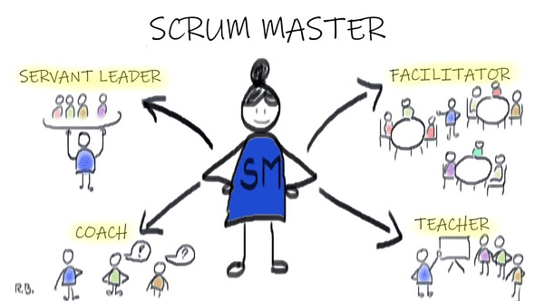

Scrum Master

Se encarga de asegurar el seguimiento de la metodología, guía las reuniones y ayuda al equipo frente a cualquier eventualidad.
Es importante entender que su rol no es de leader o jefe sino que será una especie de moderador o coach entre los distintos actores.
Por este motivo, el Scrum Master desempeñará diversos roles, según cada momento.
Barry Overeem entiende que existen 8 roles que un Scrum Master debe saber desempeñar:
- Lider servicial
- Facilitador
- Entrenador
- Gerente
- Mentor
- Maestro
- Eliminador de impedimentos
- Agente de cambio
Algunos ejemplos:
- El Scrum Master puede facilitar actividades al Scrum Team para ayudarles en su Sprint Retrospective de forma que logren una mayor participación del grupo.
- Puede entrenar a un developer que requiera orientación sobre cómo trabajar con un nuevo equipo.
- Como maestro o profesor, puede enseñar al equipo nuevas técnicas para una mejor gestión de los conflictos.
Responsabilidades del Scrum Master
- Ayuda/asiste al Scream Team: los entrena en autogestión, multidisciplinaridad, etc.
- Ayuda/asiste al Product Owner: identifica técnicas efectivas para la definición del producto, planifica, etc.
- Vela por la organización.
Si bien es necesario que el Scrum Master domine una amplia serie de conociemientos de carácter técnico, se convierte imprescindible el contar con habilidades blandas.